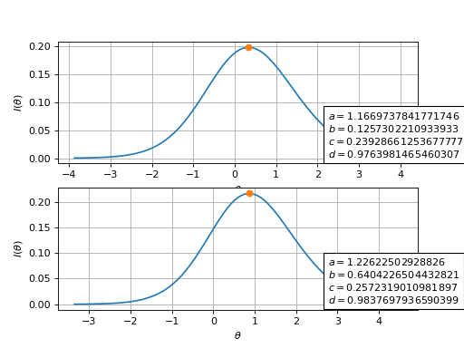

Item Response Theory Functions – catsim.irt#
This module contains functions pertaining to the Item Response Theory logistic models, including probability calculations, information functions, likelihood estimation, and other IRT-related utilities.
Item Response Theory (IRT) functions and utilities for computerized adaptive testing.
This module provides core IRT functions including item characteristic curves (ICC), item information functions, and various utility functions for parameter estimation and scale transformations.
- class catsim.irt.NumParams(*values)[source]#
Enumerator that informs how many parameters each logistic model of IRT has.
Created to avoid accessing magic numbers in the code. Each value corresponds to the number of parameters in the respective IRT model.
- Attributes:
- PL1int
One-parameter logistic model (Rasch model).
- PL2int
Two-parameter logistic model.
- PL3int
Three-parameter logistic model.
- PL4int
Four-parameter logistic model.
- catsim.irt.THETA_MAX_EXTENDED = 6.0#
Extended upper bound for ability (theta) estimation.
This value covers >99.9999% of the population (±6 standard deviations) assuming abilities are normally distributed N(0, 1). Recommended for numerical search algorithms to avoid ceiling/floor effects during estimation. Using bounds wider than the item bank difficulty range prevents artificial restrictions on ability estimates.
- catsim.irt.THETA_MAX_TYPICAL = 4.0#
Typical upper bound for ability (theta) estimation.
This value covers approximately 99.99% of the population (±4 standard deviations) assuming abilities are normally distributed N(0, 1). Commonly used in IRT literature for scale transformations and reporting.
- catsim.irt.THETA_MIN_EXTENDED = -6.0#
Extended lower bound for ability (theta) estimation.
This value covers >99.9999% of the population (±6 standard deviations) assuming abilities are normally distributed N(0, 1). Recommended for numerical search algorithms to avoid ceiling/floor effects during estimation. Using bounds wider than the item bank difficulty range prevents artificial restrictions on ability estimates.
- catsim.irt.THETA_MIN_TYPICAL = -4.0#
Typical lower bound for ability (theta) estimation.
This value covers approximately 99.99% of the population (±4 standard deviations) assuming abilities are normally distributed N(0, 1). Commonly used in IRT literature for scale transformations and reporting.
- catsim.irt.confidence_interval(theta: float, items: ndarray[tuple[Any, ...], dtype[floating[Any]]], confidence: float = 0.95) tuple[float, float][source]#
Compute the confidence interval for an ability estimate.
The confidence interval is computed using the normal approximation:
\[CI = \hat{\theta} \pm z_{\alpha/2} \times SEE(\hat{\theta})\]where \(z_{\alpha/2}\) is the critical value from the standard normal distribution corresponding to the desired confidence level, and \(SEE\) is the standard error of estimation.
- Parameters:
- thetafloat
The estimated ability value.
- itemsnpt.NDArray[numpy.floating[Any]]
A matrix containing item parameters for administered items.
- confidencefloat, optional
The confidence level, must be between 0 and 1. Default is 0.95 (95% confidence). Common values are 0.90 (90%), 0.95 (95%), and 0.99 (99%).
- Returns:
- tuple[float, float]
A tuple containing (lower_bound, upper_bound) of the confidence interval.
- Raises:
- ValueError
If confidence is not between 0 and 1.
Examples
>>> import numpy as np >>> items = np.array([[1.0, 0.0, 0.0, 1.0], [1.2, -0.5, 0.0, 1.0]]) >>> theta = 0.5 >>> lower, upper = confidence_interval(theta, items, confidence=0.95) >>> print(f"95% CI: [{lower:.3f}, {upper:.3f}]") 95% CI: [-0.234, 1.234]
- catsim.irt.detect_model(items: ndarray[tuple[Any, ...], dtype[floating[Any]]]) int[source]#
Detect which logistic model an item matrix fits into.
Examines the item parameters to determine if they represent a 1PL, 2PL, 3PL, or 4PL model based on which parameters vary.
- Parameters:
- itemsnumpy.ndarray
An item matrix with at least four columns.
- Returns:
- int
An integer between 1 and 4 denoting the logistic model: - 1: Rasch/1PL (all discrimination equal, no guessing, no upper asymptote) - 2: 2PL (varying discrimination, no guessing, no upper asymptote) - 3: 3PL (varying discrimination, guessing present, no upper asymptote variation) - 4: 4PL (all parameters vary)
- catsim.irt.icc(theta: float, a: float, b: float, c: float = 0, d: float = 1) float[source]#
Compute the Item Response Theory four-parameter logistic function [Magis, 2013].
The item characteristic curve (ICC) represents the probability that an examinee with ability \(\theta\) will correctly answer an item with the given parameters.
\[P(X_i = 1| \theta) = c_i + \frac{d_i-c_i}{1+ e^{-a_i(\theta-b_i)}}\]- Parameters:
- thetafloat
The individual’s ability value. This parameter value has no boundary, but if a distribution of the form \(N(0, 1)\) was used to estimate the parameters, then typically \(-4 \leq \theta \leq 4\).
- afloat
The discrimination parameter of the item, usually a positive value in which \(0.8 \leq a \leq 2.5\). Higher values indicate better discrimination between ability levels.
- bfloat
The item difficulty parameter. This parameter value has no boundaries, but it must be in the same value space as theta (usually \(-4 \leq b \leq 4\)). Higher values indicate more difficult items.
- cfloat, optional
The item pseudo-guessing parameter. Being a probability, \(0\leq c \leq 1\), but items considered good usually have \(c \leq 0.2\). Represents the lower asymptote (probability of guessing correctly). Default is 0.
- dfloat, optional
The item upper asymptote. Being a probability, \(0\leq d \leq 1\), but items considered good usually have \(d \approx 1\). Represents the maximum probability of correct response. Default is 1.
- Returns:
- float
The probability \(P(X_i = 1| \theta)\) of a correct response, a value between c and d.
- catsim.irt.icc_hpc(theta: float | ndarray[tuple[Any, ...], dtype[floating[Any]]], items: ndarray[tuple[Any, ...], dtype[floating[Any]]]) ndarray[tuple[Any, ...], dtype[floating[Any]]][source]#
Compute item characteristic functions for all items in a numpy array at once.
This is a high-performance computing (HPC) version that uses vectorized operations with numpy and numexpr for efficient batch processing of multiple items.
- Parameters:
- thetafloat or numpy.ndarray
The individual’s ability value(s). Can be a scalar or an array for element-wise computation with items (via numpy broadcasting).
- itemsnumpy.ndarray
Array containing item parameters with at least four columns [a, b, c, d, …].
- Returns:
- numpy.ndarray
An array of probabilities, one for each item, representing the probability of a correct response given the current theta.
- catsim.irt.inf(theta: float, a: float, b: float, c: float = 0, d: float = 1) float[source]#
Compute the information value of an item using the Item Response Theory four-parameter logistic model.
Item information quantifies how precisely an item can estimate ability at a given \(\theta\) level. Higher information indicates better precision. References are given in [De Ayala, 2009, Magis, 2013].
\[I_i(\theta) = \frac{a^2[(P(\theta)-c)]^2[d - P(\theta)]^2}{(d-c)^2[1-P(\theta)]P(\theta)}\]- Parameters:
- thetafloat
The individual’s ability value. This parameter value has no boundary, but if a distribution of the form \(N(0, 1)\) was used to estimate the parameters, then typically \(-4 \leq \theta \leq 4\).
- afloat
The discrimination parameter of the item, usually a positive value in which \(0.8 \leq a \leq 2.5\).
- bfloat
The item difficulty parameter. This parameter value has no boundary, but if a distribution of the form \(N(0, 1)\) was used to estimate the parameters, then typically \(-4 \leq b \leq 4\).
- cfloat, optional
The item pseudo-guessing parameter. Being a probability, \(0\leq c \leq 1\), but items considered good usually have \(c \leq 0.2\). Default is 0.
- dfloat, optional
The item upper asymptote. Being a probability, \(0\leq d \leq 1\), but items considered good usually have \(d \approx 1\). Default is 1.
- Returns:
- float
The information value of the item at the designated theta point.
- catsim.irt.inf_hpc(theta: float | ndarray[tuple[Any, ...], dtype[floating[Any]]], items: ndarray[tuple[Any, ...], dtype[floating[Any]]]) ndarray[tuple[Any, ...], dtype[floating[Any]]][source]#
Compute the information values for all items in a numpy array using numpy and numexpr.
This is a high-performance computing (HPC) version that uses vectorized operations for efficient batch processing of item information values.
- Parameters:
- thetafloat or numpy.ndarray
The individual’s ability value(s). Can be a scalar or an array for element-wise computation with items (via numpy broadcasting).
- itemsnumpy.ndarray
Array containing item parameters with at least four columns [a, b, c, d, …].
- Returns:
- numpy.ndarray
Array containing the information values for each item at the given theta. Information quantifies how much an item contributes to ability estimation precision at the specified ability level.
- catsim.irt.log_likelihood(est_theta: float, response_vector: list[bool], administered_items: ndarray[tuple[Any, ...], dtype[floating[Any]]]) float[source]#
Compute the log-likelihood of an ability, given a response vector and the parameters of the answered items.
The likelihood function of a given \(\theta\) value given the answers to \(I\) items is given by [De Ayala, 2009]:
\[L(X_{Ij} | \theta_j, a_I, b_I, c_I, d_I) = \prod_{i=1} ^ I P_{ij}(\theta)^{X_{ij}} Q_{ij}(\theta)^{1-X_{ij}}\]Finding the maximum of \(L(X_{Ij})\) includes using the product rule of derivations. Since \(L(X_{Ij})\) has \(j\) parts, it can be quite complicated to do so. Also, for computational reasons, the product of probabilities can quickly tend to 0, so it is common to use the log-likelihood in maximization/minimization problems, transforming the product of probabilities into a sum of log probabilities:
\[\log L(X_{Ij} | \theta_j, a_I, b_I, c_I, d_I) = \sum_{i=1} ^ I \left\lbrace x_{ij} \log P_{ij}(\theta)+ (1 - x_{ij}) \log Q_{ij}(\theta) \right\rbrace\]where \(Q_{ij}(\theta) = 1 - P_{ij}(\theta)\).
- Parameters:
- est_thetafloat
Estimated ability value.
- response_vectorlist[bool]
A boolean list containing the response vector, where True indicates a correct response and False indicates an incorrect response.
- administered_itemsnumpy.ndarray
A numpy array containing the parameters of the answered items.
- Returns:
- float
Log-likelihood of the given ability value, given the responses to the administered items. Higher values indicate better fit.
- Raises:
- ValueError
If response vector and administered items have different lengths or if the response vector contains non-Boolean elements.
- catsim.irt.max_info(a: float = 1, b: float = 0, c: float = 0, d: float = 1) float[source]#
Return the \(\theta\) value at which an item provides maximum information.
For the 1-parameter and 2-parameter logistic models, this \(\theta\) equals \(b\). In the 3-parameter and 4-parameter logistic models, however, this value is given by [Magis, 2013]
\[argmax_{\theta}I(\theta) = b + \frac{1}{a} log \left(\frac{x^* - c}{d - x^*}\right)\]where
\[x^* = 2 \sqrt{\frac{-u}{3}} cos\left\{\frac{1}{3}acos\left(-\frac{v}{2}\sqrt{\frac{27}{-u^3}}\right)+ \frac{4 \pi}{3}\right\} + 0.5\]\[u = -\frac{3}{4} + \frac{c + d - 2cd}{2}\]\[v = \frac{c + d - 1}{4}\]A few results can be seen in the plots below:
(
Source code,png,hires.png,pdf)
Fig. 3 Item information curves for two distinct items. The point of maximum information denoted by a dot.#
- Parameters:
- afloat, optional
Item discrimination parameter. Default is 1.
- bfloat, optional
Item difficulty parameter. Default is 0.
- cfloat, optional
Item pseudo-guessing parameter. Default is 0.
- dfloat, optional
Item upper asymptote. Default is 1.
- Returns:
- float
The \(\theta\) value at which the item with the given parameters provides maximum information.
{kind=link}
{kind=link}
- catsim.irt.max_info_hpc(items: ndarray[tuple[Any, ...], dtype[floating[Any]]]) ndarray[tuple[Any, ...], dtype[floating[Any]]][source]#
Parallelized version of
max_info()usingnumpyandnumexpr.This high-performance computing version efficiently computes the theta values of maximum information for multiple items simultaneously using vectorized operations.
- Parameters:
- itemsnumpy.ndarray
Array containing item parameters with at least four columns [a, b, c, d, …].
- Returns:
- numpy.ndarray
An array of theta values, one for each item, indicating where each item’s information function reaches its maximum.
- catsim.irt.negative_log_likelihood(est_theta: float, *args: Any) float[source]#
Compute the negative log-likelihood of an ability value for a response vector and parameters of administered items.
This function is used by
scipy.optimizeoptimization functions that tend to minimize values, instead of maximizing them. Since we want to maximize the log-likelihood, we minimize the negative log-likelihood. The value ofnegative_log_likelihood()is simply \(-\)log_likelihood().- Parameters:
- est_thetafloat
Estimated ability value.
- *argstuple
Variable length argument list. Expected to contain:
args[0]: response_vector (list[bool]) - A Boolean list containing the response vector
args[1]: administered_items (numpy.ndarray) - A numpy array containing the parameters of the answered items
- Returns:
- float
Negative log-likelihood of a given ability value, given the responses to the administered items. Lower values indicate better fit.
- catsim.irt.normalize_item_bank(items: ndarray[tuple[Any, ...], dtype[floating[Any]]]) ndarray[tuple[Any, ...], dtype[floating[Any]]][source]#
Normalize an item matrix so that it conforms to the standard used by catsim.
The item matrix must have dimension \(n \times 4\), in which column 0 represents item discrimination, column 1 represents item difficulty, column 2 represents the pseudo-guessing parameter and column 3 represents the item upper asymptote.
This function automatically expands item matrices with fewer than 4 columns:
1 column (1PL): Assumed to be difficulty. Discrimination=1, c=0, d=1 are added.
2 columns (2PL): Assumed to be [discrimination, difficulty]. c=0, d=1 are added.
3 columns (3PL): Assumed to be [discrimination, difficulty, pseudo-guessing]. d=1 is added.
4 columns (4PL): Already complete, returned as-is.
- Parameters:
- itemsnumpy.ndarray
The item matrix with 1, 2, 3, or 4 columns.
- Returns:
- numpy.ndarray
An \(n \times 4\) item matrix conforming to the 4-parameter logistic model, with columns [a, b, c, d].
- catsim.irt.reliability(theta: float, items: ndarray[tuple[Any, ...], dtype[floating[Any]]]) float[source]#
Compute test reliability [Thissen, 2000].
Test reliability is a measure of internal consistency for the test, similar to Cronbach’s \(\alpha\) in Classical Test Theory. Its value is always lower than 1, with values close to 1 indicating good reliability. If \(I(\theta) < 1\), \(Rel < 0\) and in these cases it does not make sense, but usually the application of additional items solves this problem.
\[Rel = 1 - \frac{1}{I(\theta)}\]- Parameters:
- thetafloat
An ability value.
- itemsnumpy.ndarray
A matrix containing item parameters.
- Returns:
- float
The test reliability at theta for a test represented by items. Values range from negative infinity to just below 1, with values closer to 1 indicating higher reliability.
- catsim.irt.scale_to_theta(score: float | ndarray[tuple[Any, ...], dtype[floating[Any]]], scale_min: float = 0, scale_max: float = 100, theta_min: float = -4, theta_max: float = 4) float | ndarray[tuple[Any, ...], dtype[floating[Any]]][source]#
Convert scores from a custom scale to theta values using linear transformation.
This function transforms scores from any desired scale (e.g., 0-100, 200-800) back to the standard IRT theta scale (typically centered at 0).
The inverse linear transformation is:
\[\theta = \frac{\text{score} - b}{a}\]where \(a\) and \(b\) are determined by the scale mapping.
- Parameters:
- scorefloat or numpy.ndarray
Score value(s) on the custom scale.
- scale_minfloat, optional
Minimum value of the score scale. Default is 0.
- scale_maxfloat, optional
Maximum value of the score scale. Default is 100.
- theta_minfloat, optional
Minimum theta value in the mapping. Default is -4.
- theta_maxfloat, optional
Maximum theta value in the mapping. Default is 4.
- Returns:
- float or numpy.ndarray
The transformed theta value(s). Returns the same type as input.
Notes
This is the inverse of
theta_to_scale()Useful for converting cutoff scores to theta values for classification
Preserves the relative ordering and distances of scores
Examples
>>> # Convert 0-100 score to theta >>> scale_to_theta(50.0) # Average score 0.0 >>> scale_to_theta(75.0) # High score 2.0 >>> scale_to_theta(25.0) # Low score -2.0
>>> # Convert from SAT-like scale (200-800) >>> scale_to_theta(500.0, scale_min=200, scale_max=800) 0.0
>>> # Convert multiple values at once >>> import numpy as np >>> scores = np.array([0, 25, 50, 75, 100]) >>> scale_to_theta(scores) array([-4., -2., 0., 2., 4.])
- catsim.irt.see(theta: float, items: ndarray[tuple[Any, ...], dtype[floating[Any]]]) float[source]#
Compute the standard error of estimation (\(SEE\)) of a test.
The estimate is computed at a specific \(\theta\) value [De Ayala, 2009].
The standard error of estimation is the square root of variance and represents the typical error in ability estimation. It is in the same units as the ability scale, making it more interpretable than variance.
\[SEE = \sqrt{\frac{1}{I(\theta)}}\]where \(I(\theta)\) is the test information (see
test_info()).- Parameters:
- thetafloat
An ability value.
- itemsnpt.NDArray[numpy.floating[Any]]
A matrix containing item parameters.
- Returns:
- float
The standard error of estimation at theta for a test represented by items. Returns infinity if test information is 0.
- catsim.irt.test_info(theta: float, items: ndarray[tuple[Any, ...], dtype[floating[Any]]]) float[source]#
Compute the test information of a test at a specific \(\theta\) value [De Ayala, 2009].
Test information is the sum of individual item information values and indicates the precision of ability estimation at a given ability level.
\[I(\theta) = \sum_{j \in J} I_j(\theta)\]- Parameters:
- thetafloat
An ability value at which to compute test information.
- itemsnumpy.ndarray
A matrix containing item parameters with at least four columns [a, b, c, d, …].
- Returns:
- float
The test information at theta for a test represented by items. Higher values indicate more precise ability estimation.
- catsim.irt.theta_to_scale(theta: float | ndarray[tuple[Any, ...], dtype[floating[Any]]], scale_min: float = 0, scale_max: float = 100, theta_min: float = -4, theta_max: float = 4) float | ndarray[tuple[Any, ...], dtype[floating[Any]]][source]#
Convert theta values to a custom score scale using linear transformation.
This function transforms ability estimates from the standard IRT theta scale (typically centered at 0) to any desired score scale (e.g., 0-100, 200-800).
The linear transformation is:
\[\text{score} = a \cdot \theta + b\]where \(a\) and \(b\) are determined by mapping the theta range to the score range.
- Parameters:
- thetafloat or numpy.ndarray
Ability value(s) on the theta scale.
- scale_minfloat, optional
Minimum value of the target score scale. Default is 0.
- scale_maxfloat, optional
Maximum value of the target score scale. Default is 100.
- theta_minfloat, optional
Minimum theta value to map. Default is -4 (typical lower bound).
- theta_maxfloat, optional
Maximum theta value to map. Default is 4 (typical upper bound).
- Returns:
- float or numpy.ndarray
The transformed score(s) on the target scale. Returns the same type as input.
Notes
Values outside [theta_min, theta_max] are extrapolated linearly
The transformation preserves relative distances between ability levels
Common score scales: 0-100, 200-800 (SAT), 0-500 (TOEFL), etc.
Examples
>>> # Convert theta to 0-100 scale >>> theta_to_scale(0.0) # Average ability 50.0 >>> theta_to_scale(2.0) # High ability 75.0 >>> theta_to_scale(-2.0) # Low ability 25.0
>>> # Convert to SAT-like scale (200-800) >>> theta_to_scale(0.0, scale_min=200, scale_max=800) 500.0
>>> # Convert multiple values at once >>> import numpy as np >>> thetas = np.array([-4, -2, 0, 2, 4]) >>> theta_to_scale(thetas) array([ 0., 25., 50., 75., 100.])
- catsim.irt.validate_item_bank(items: ndarray[tuple[Any, ...], dtype[floating[Any]]], raise_err: bool = False) None[source]#
Validate the shape and parameters in the item matrix to ensure it conforms to catsim standards.
The item matrix must have dimension \(n \times 4\), in which column 0 represents item discrimination, column 1 represents item difficulty, column 2 represents the pseudo-guessing parameter and column 3 represents the item upper asymptote.
The item matrix must have at least one line (representing an item) and exactly four columns, representing the discrimination, difficulty, pseudo-guessing and upper asymptote parameters (\(a\), \(b\), \(c\) and \(d\)), respectively. The item matrix is considered valid if, for all items in the matrix, \(a > 0 \wedge 0 \leq c \leq 1 \wedge 0 \leq d \leq 1\).
- Parameters:
- itemsnumpy.ndarray
The item matrix to validate.
- raise_errbool, optional
Whether to raise an error in case the validation fails (True) or just print the error message to standard output (False). Default is False.
- Raises:
- TypeError
If items is not a numpy.ndarray.
- ValueError
If raise_err is True and the item matrix does not meet validation criteria.
- catsim.irt.var(theta: float | None = None, items: ndarray[tuple[Any, ...], dtype[floating[Any]]] | None = None, test_inf: float | None = None) float[source]#
Compute the variance (\(Var\)) of the ability estimate of a test at a specific \(\theta\) value.
Variance quantifies the uncertainty in the ability estimate. Lower variance indicates more precise estimation.
\[Var = \frac{1}{I(\theta)}\]where \(I(\theta)\) is the test information (see
test_info()).- Parameters:
- thetafloat or None, optional
An ability value (required if test_inf is not provided). Default is None.
- itemsnumpy.ndarray or None, optional
A matrix containing item parameters (required if test_inf is not provided). Default is None.
- test_inffloat or None, optional
The test information value. If provided, theta and items are not required. Default is None.
- Returns:
- float
The variance of ability estimation. Returns negative infinity if test information is 0.
- Raises:
- ValueError
If neither test_inf nor both theta and items are provided.